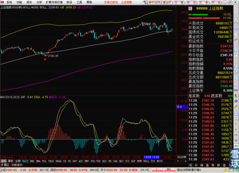
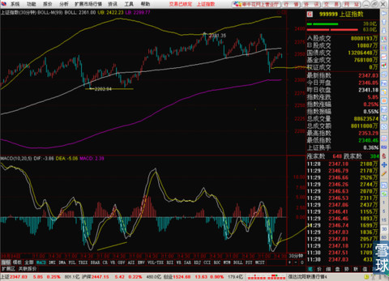
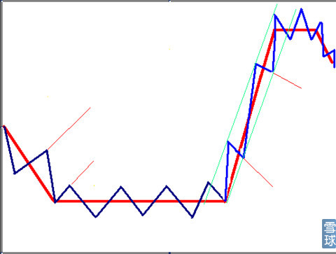
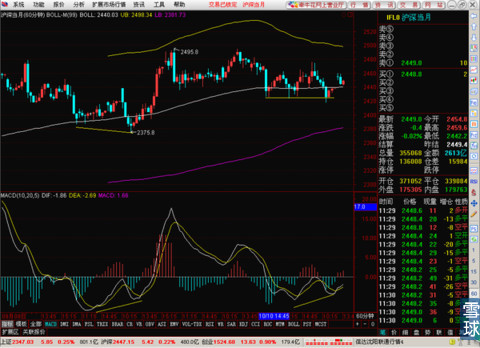
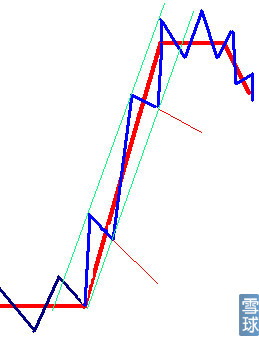
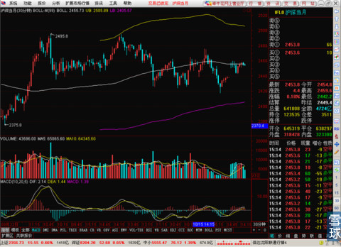
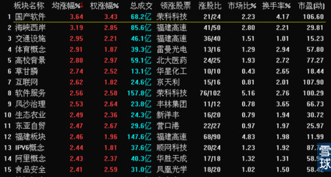
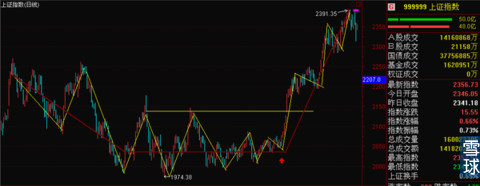
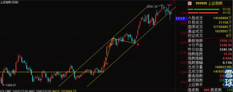

今天的走势总体比较正常，在周末外盘大涨和央行定性释放流动性的双重利好之下。高开之后，自行封闭了高开这部分涨幅。之后震荡盘整。60分钟线的BOLL中轨依旧是震荡的依托。

但是30分钟还没有回到BOLL上方，所以短期暂时等一等，看好30分钟底背离出现在进场做短线。

参照前一次的走势，看好是不是按照后面这条黄线的走法，如果是的话。短线可以进一点，但是不要太恋战。
正好今天早上@Alkaid同学问了我这样一个问题
正好写书稿也写到这个部分，所以借这个机会给大家讲一下，趋势和波动的问题。还有就是有的同学表示迷茫的日线走势和30分钟或者60分钟线出现分歧的时候该怎么办的问题。
先给大家看一张我自己随手画的图。

很多新手都会以为一只股票的走势是红色线条画出来的那样。
但是看到这种图，大家都能反应过来，其实不对。股价其实从来都是按照蓝线那样运行的。红线就是代表了趋势。下跌——横盘——上涨——高位横盘——下跌。
但是股价真实的情况是蓝线那样，在趋势中不断的进行波动。
大家还记不记得周五的笔记里我贴的这种图？

股指期货的60分钟线提前于上证指数出现了底背离。那时候央行放水和外盘上涨这两大原因还没有出现。但是盘面上已经有了积极信号。于是有了今天早盘股指期货的高开和现在这样一个整体涨幅。那么说明技术分析是有很大成功概率的，也是有先见性的。同时上证指数的走势没有股指期货漂亮。所以今天虽然上证指数目前是红的，但是总体弱于股指期货。
这个就是关键所在了。我们都知道现在上证指数和股指期货日线级别是一个复合型的顶背离姿态。这是我为什么一直都说，随时可能出现黎明前的黑暗。大盘可能要出现让大多数散户对后市绝望的恐怖调整，之后才能是真正的连续快速上攻。
但是短期我又没有马上看空，建议大家这时候就减仓。还建议大家看到30分钟线出现底背离可以做做短线。这个矛盾么？不矛盾的！日线上反应出来的情况是我画的草图里的红线，而30分钟线和60分钟线上反应出来的情况是我画的蓝线。也就是说日线可以看趋势，分时可以看波动。做中长线的只盯住日线就好。纯粹做短线的，要去看30分钟线和60分钟线，在比较大的波动中找短线的机会。

单看一次上涨趋势也能说明一些大家经常被主力骗进场或者是洗出去的原因。
比如在上涨过程中，本来我们的预期是按照最粗的红线走，但是实际上走的是蓝线，上涨的时候，大家不会去关注上涨的斜率和预期的斜率之间的差别，觉得判断的是反正正确的。但是一旦连续下跌洗盘的时候。这个斜率的反差太明显了。大家都以为上涨趋势没了，股价要沿着细红线的方向下跌了，就是惊恐之下就把筹码都交了。关键就在于市场主力抓住了大家的心理，就是要迷惑你把波动当成是趋势。至于那些一种在高喊不可能有牛市，现在的涨幅都是反弹的人，恰恰毛病相反，把趋势当成了波动。总之混淆趋势和波动是中短线操作最容易产生也是最致命的误区。所以有些死握股票不怎么看盘的人反而赢了，原因就在于有的时候少看盘减少了波动对心理的干预，减少了错把波动当趋势的情况。
但是看一下淡蓝色的通道线。就知道其实趋势没有被破坏掉。股价在波动之后还是保留了原有的趋势。于是就造成了技术分析只要套用在历史走势里，几乎是百用百灵，一旦用于对未来趋势预测，由于心理原因。导致错误不断。等这段未来变成历史的时候再会看，其实技术分析还是对的。于是就有了技术分析是专打马后炮一说。
但是每次复盘都正确的东西，绝对不可能是巧合。在预测未来的时候就出错，那只能说明使用方式有问题而不是技术分析本身不对。
所以，学一点支撑线和压力线，还有简单的价格通道线是帮助新手战胜不能有效分辨趋势和波动的最好办法。
刚才一直在等着看股指期货的收盘情况，最后股指期货也正好收在30分钟BOLL中轨下方，这对明天的走势可能稍稍有点不利。

同时上证指数15分钟线的走势也是恰好停在BOLL中轨附近，而且中轨是倾斜向下的。这样的情况下，除了今晚有利好，或者是外盘大涨的情况出现，明天小高开直接站到线上的话，那么明天上午可能要调整到2339一带寻找60分钟线的中轨支撑，这样的话分时上就会留下一个小双底的图形，如果是这样的走法的话，在小双底出现，并且MACD接近0轴的时候可以少量的做一点超短线。
今天的板块上没有什么太大亮点可言，后市还是要看金融类股票的脸色。今天银行还好，券商冲高之后回落，明天的早盘调整和双底之后的小拉升可能还是要依赖金融类的权重股。

我中午看到有小伙伴在问趋势的确立是怎么界定的，这是一个有建设性的问题。在这里简单说明一下。

我们看下这个截图，红色是明确的趋势线，先下跌——横盘——上涨。
那么以横盘变为上涨这一段为例子，首先我们能看到的是在横盘过程中黄线穿越红线上下波动的幅度越来越小。这是第一个特征。其次我们看到最后上涨初期的时候股价接近前期两次高点连线的黄色横线，这是特征二。这时候我们可以在心理认定突破横盘趋势的可能性很大，但是不能去赌一定是这次就马上突破。之前在红色箭头附近建仓的可以谨慎的等待，因为有盈利作为缓冲，即使突破失败，马上清仓的话也不会损失本金，但依然有盈利。不过要是后来追高进场的话，这个时候应该清仓看突破成功之后再说。然后我们看到了特征三，有效突破前期横盘的最高点，注意必须是有效突破，三天OR百分之三的标准。同时突破的时候是一个跳空缺口，这明显是突破性缺口对后市走势极为有利，所以这个时候可以放心的认定趋势已经从之前的横盘进入到了上涨趋势，而不是横盘里的向上波动了。

所以看到那个第一个红箭头对应的大阳线之后就可以放心介入了。之后第一次调整结束之后，留下了一个转折点。这时候就可以做价格通道的连线了。把启动点和第一个调整点连接起来。这样的支撑线和对应的第一次调整开始价位位置的平行线就是价格通道。通道标识的方向就是上涨的趋势方向和空间范围。基本上不超出这个范围的就是都不是趋势，而是波动。
 |
今天的走势总体比较正常，在周末外SaiLv 2014-10-20 12:28:37 |
Copyright © 1996-2014 SINA Corporation All Rights Reserved.